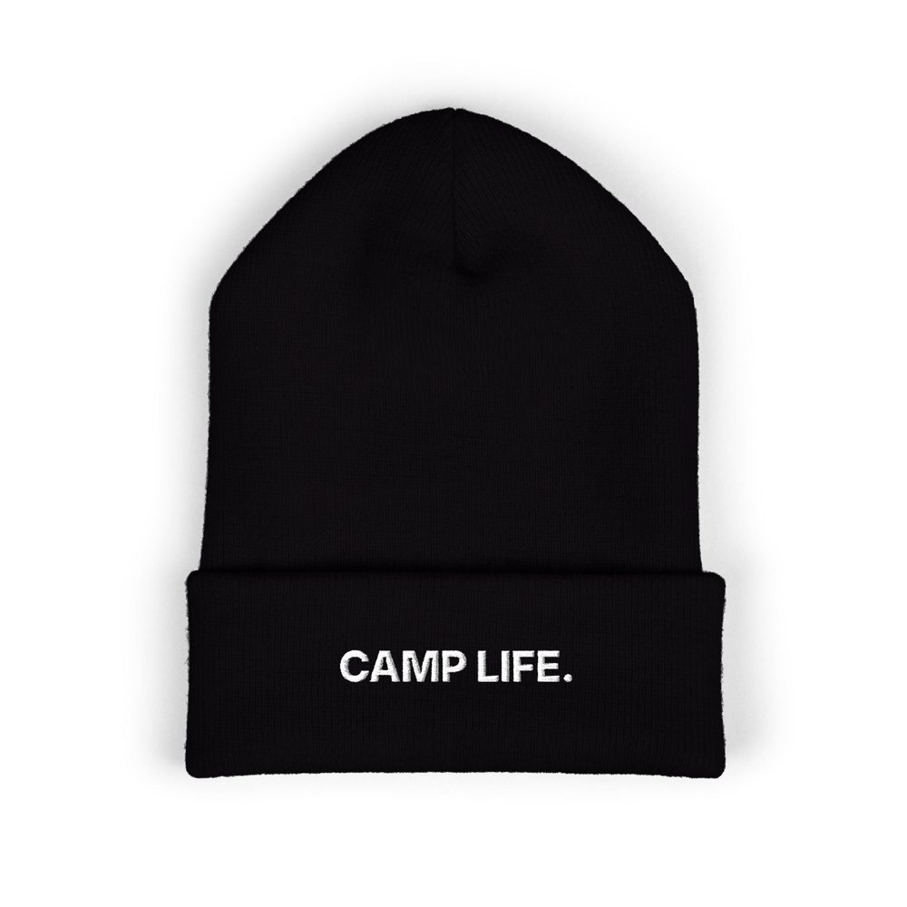
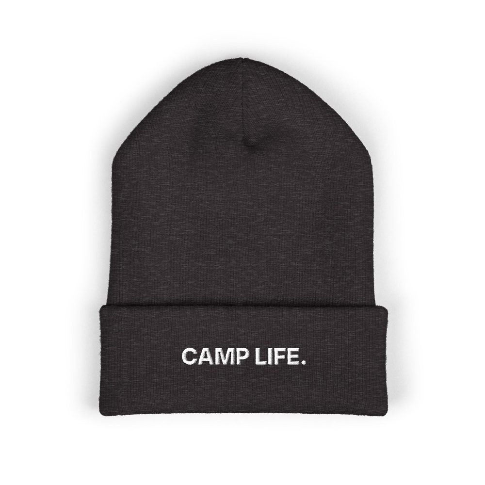
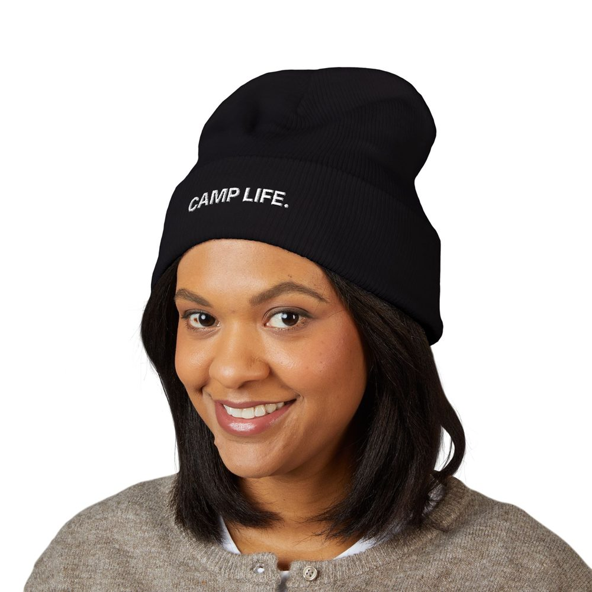
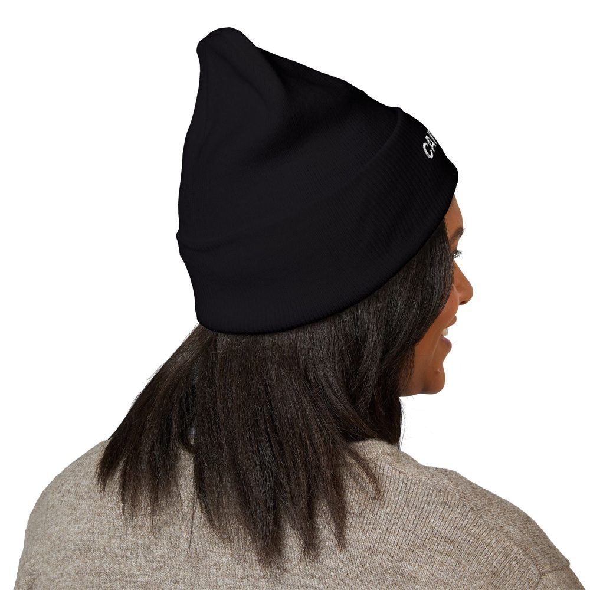
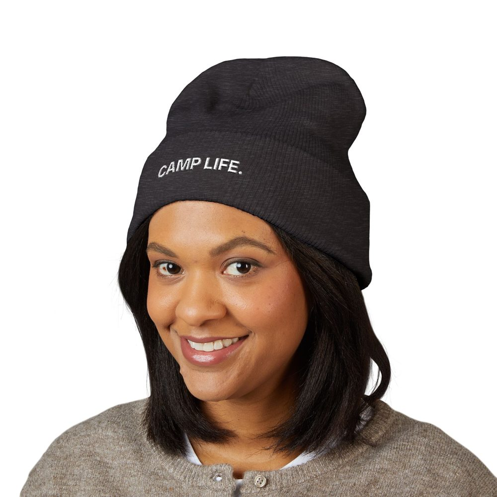
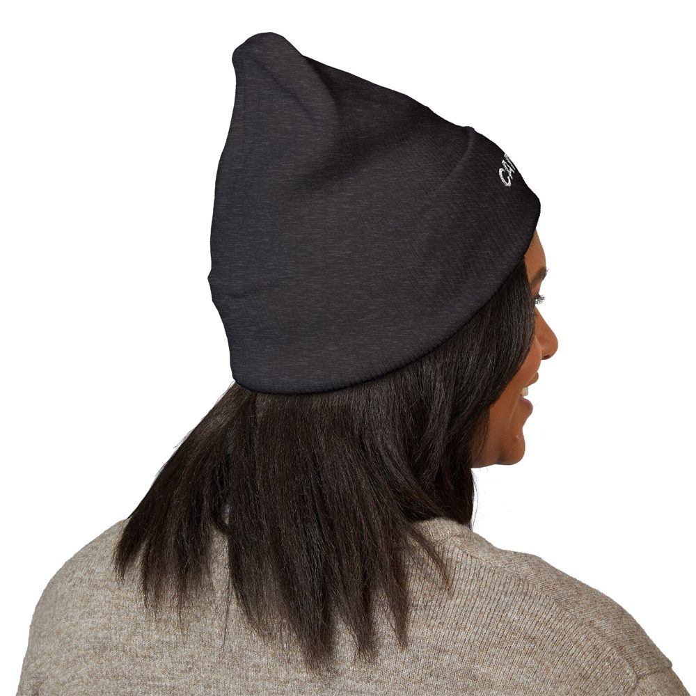

Shop › Toque






Toque
Camp Life toque
For the winter rotation: a toque that says it for you.
CAD $39.99 launch price
Opening soon. Get an email when the shop opens.
About this design
A cuffed toque with Camp Life embroidered on the cuff. For the winter rotation and the long walk to the truck. Original design, no company names or logos.
Details
- Cuffed knit toque (beanie) with embroidered cuff
- One size; fabric and lining are set in the store listing
- No oil company names or logos
Launch price in Canadian dollars; shipping and tax are added at checkout and the store confirms the final price. Tidywells is not affiliated with any regulator or operator.